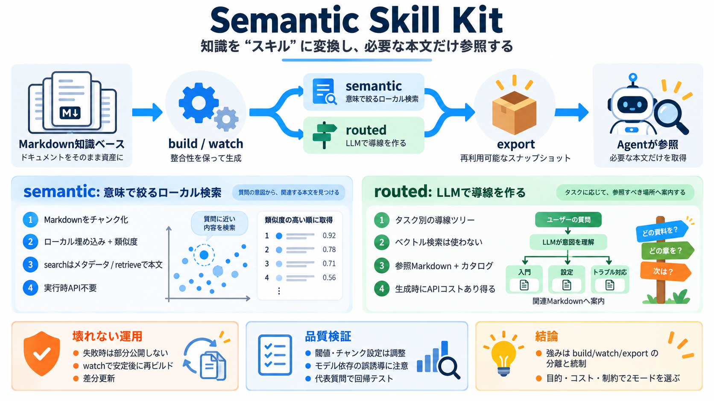

Building Semantic Search with Transformers.js and Sentence Embeddings - MachineLearningMastery.com
Xenova/all-MiniLM-L6-v2 is the right default for most English-language use cases. It’s fast, small, and produces strong …

Semantic Skill Kitは、Markdown知識ベースから「トピック別のエージェント用スキル」を自動生成するためのフレームワークです。検索と参照の方式を semantic / routed から選べるのが核です。
エージェントにとって、関連するガイドへ誘導して「必要な本文だけ」を参照させることが難題になります。更新・運用も含め、混ざらない設計が重要です。
知識ベース更新（build/watch）と、エージェントの利用（search/retrieve、または生成済みSKILL利用）を分けます。これにより、バージョン混合のリスクを下げます。
semanticは意味検索で関連チャンクを絞り込み、routedはLLMでタスク向けのルーティング索引を生成します。どちらも「参照」に重点があります。
semanticはGPUやAPIキー不要でローカル完結。routedはビルド時にLLM API課金が起こり得ます。運用要件に応じて使い分けます。
semanticはMarkdownを見出し構造でチャンク化し、ローカル埋め込みでベクトル化します。類似度で関連文書候補を絞り、必要なガイド本文を参照用に返します。
補足：searchはメタデータ（ランキング）だけを返し、本文はretrieveで取得します。
routedはベクトル検索や埋め込みモデルを使わず、LLM APIで「どのセクションがどんなユーザタスクに関係するか」を案内ツリー/索引として生成します。運用は参照とインデックス中心です。
例：export --mode routed は、ルーティング生成のためのコストが発生し得ます。
watchは安定性条件を満たすと再ビルドします。ビルド失敗時は部分スキルを公開しないなど、整合性の保護が設計されています。
routedビルドでは応答が routing-cache に保存され、--offline はキャッシュのみでビルドします。キャッシュは知識ベースデータとして扱うべき、とされています。
semanticの類似度閾値（例：0.3）やチャンク設定はドメイン依存です。routedのルーティング生成もモデル品質に依存するため、誤誘導率や正確性は事前評価が必須です。
semanticとroutedは「検索の仕方」と「生成の責務」が異なります。代表的な疑問を短く整理します。
Semantic Skill Kitは、build/watch/exportで段階分離し、routedでは実行時APIを前提にしない方針が強みです。運用では、キャッシュ管理・閾値調整・代表質問での品質検証までセットで評価するのが現実解です。
Xenova/all-MiniLM-L6-v2 is the right default for most English-language use cases. It’s fast, small, and produces strong …
Hugging Face's logo # Xenova / all-MiniLM-L6-v2 like 142 ### Instructions to use Xenova/all-MiniLM-L6-v2 with librarie…
``` providers: - transformers:feature-extraction:Xenova/all-MiniLM-L6-v2 ``` Popular models: `Xenova/all-MiniLM-L6-v…
2026-03-06 21:42:33.970864311 [E:onnxruntime:, inference\_session.cc:2579 operator()] Exception during initialization: /…
You're building semantic search over fewer than 1M chunks → all-MiniLM-L6-v2 is likely overkill or underkill depending o…